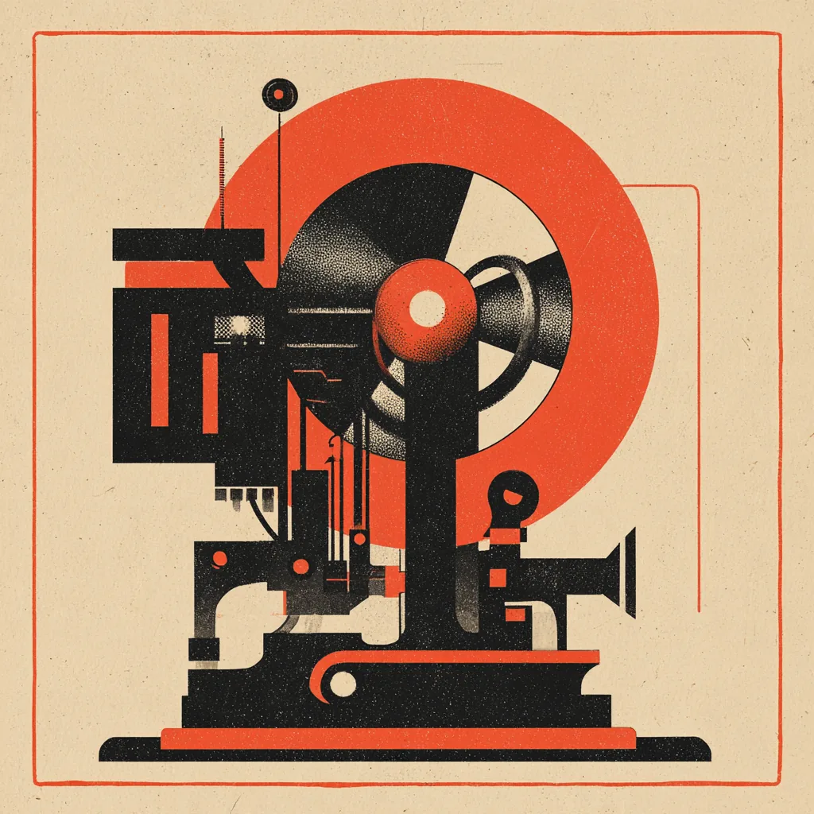

About

An idea by Carlo, written by Claude, based on PierG's newsletter.
The idea
Every day there is more news about artificial intelligence than anyone can read. Piergiorgio Grossi (PierG) gathers it and sums it up in Italian in his newsletter, the Daily Brief. These two papers lay it out again, so it can be read like a daily paper and, on Sundays, like a weekly magazine.
The daily
Every morning Claude reads that day's Daily Brief and lays it out like a poster: one lead story, the number of the day, the rest in an index, and in the margins the short columns In brief, Weak signals and From social media. Each day of the week has its own colour. Every story links to its original sources. It comes out in Italian as Il Quotidiano dell'AI and in English as The AI Daily.
AI Weekly
On Sundays Claude rereads the week's newsletters, picks the themes that came up most often and tells them in a cover story and three longer pieces, with the week in brief, the numbers and what to watch. The comment is Claude's own analysis and says so, and it is always followed by another reading that tests its argument. It comes out in Italian as Il Settimanale dell'AI and in English as AI Weekly.
English editions
The English text is not a machine translation of the Italian. Claude writes it from the Italian edition and, where the original English source can be read, checks names, figures and dates against it. Sources are linked, never copied.
The images
News photos come from Wikimedia Commons, under free licences, and are printed in two colours: they are stock images chosen for the subject, not photos of the event. Author and licence are given under each photo. The masthead emblem, the icons, the covers and this illustration were generated with Midjourney.
Following along
There are RSS feeds, in Italian, for the daily and the weekly. To get the Daily Brief by email, ask PierG. The site only remembers, in your own browser, the last edition you saw and the stories you opened, and sends it to no one.